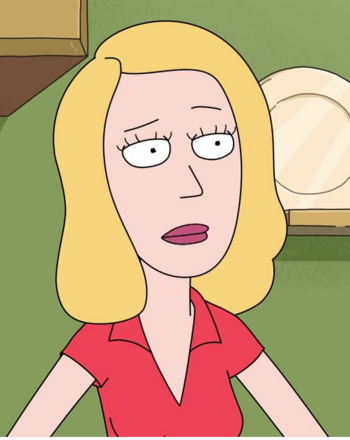

Beth Smith

Bethany "Beth" Smith (nascida Sanchez) é um dos cinco personagens principais de Rick e Morty. Ela é filha de Rick Sanchez e
Sra. Sanchez / Diane Sanchez , esposa de Jerry Smith , e mãe de Summer Smith e do falecido Morty Smith. Ela atualmente
atua como mãe e filha de Morty Smith e Rick Sanchez da dimensão Cronenberged, respectivamente. Ela também trabalha
como veterinária no Hospital St. Equis.
Caracterizada por um complexo de superioridade e questões de abandono, Beth gradualmente passou a lutar com o marido
sobre suas contribuições para o casamento, devido em parte à sua posição de nível inferior e ao emprego subsequente,
ainda mais impulsionado pelo pai influenciando seus sentimentos de superioridade. Os dois acabaram se divorciando,
antes de se reunirem no final da 3ª temporada.
Na mesma época, Beth lutou com a decisão de deixar sua família para se encontrar ou permanecer na Terra. Ela acabou
deixando Rick decidir por ela. Rick decidiu criar um clone de Beth e enviou aleatoriamente uma Beth para o espaço enquanto
deixava a outra na Terra, deixando-a desconhecida tanto para Rick quanto para o público que Beth é o clone.
História e Antecedentes
Os detalhes da história de Beth são relativamente desconhecidos, ela nasceu de Rick Sanchez e Mrs. Sanchez / Diane Sanchez , ela se contou como uma
mulher de "olhos brilhantes" de Muskegon, Michigan em Meeseeks and Destroy. Em algum momento de sua infância, o casamento de seus pais se deteriorou
em meio a circunstâncias desconhecidas e seu pai deixou sua mãe. Beth se culpou por seus pais terem brigado, e vendo seu pai como um cientista
inteligente em comparação com sua mãe, Beth passou a idolatrar seu pai e culpou sua mãe por "expulsar o pai com coragem de sair".
É revelado no ABC de Beth, que em algum momento de sua infância, Beth se tornou uma garotinha insana e psicótica. Ela começou a pedir a seu pai Rick
para criar armas parecidas com brinquedos para prejudicar outras crianças. Sendo adulta, Beth desculpou-se por ter pedido que "passasse tempo com
o pai". Rick, ciente de que o perigo crescente que representaria sua filha, criou um mundo de sonhos para sua filha, Froopyland, a fim de manter
as outras crianças do bairro seguras. Beth conseguiu levar um de seus amigos, Tommy, para Froopyland, onde, segundo Tommy, ela empurrou a
criança para um pântano de mel, em um ato de ciúmes com Tommy e seu bom relacionamento com o pai. Então ela se convenceu automaticamente de que
Tommy se perdeu em Froopyland.
Beth aspirava a se tornar uma cirurgiã cardíaca quando adulta, mas durante o ensino médio, quando ela já tinha 17 anos, ela foi ao baile com seu colega
de classe, Jerry Smith, possivelmente por pena ou possivelmente por manipulação de Ricks na esperança de provocar a concepção posterior de Mortys.
Beth e Jerry fizeram sexo na noite do baile e ela engravidou de sua primeira e única filha, Summer. Ela pensou em abortar o feto, justificando mais
tarde que "todo mundo pensa nisso", mas conseguiu entrar na faculdade e se tornar uma cirurgiã veterinária, especializada em cavalos, eventualmente
encontrando trabalho no Hospital St. Equis. Ela também decidiu se casar com o namorado Jerry e alguns anos depois (engravidou aos 20 anos), teve seu
segundo e único filho, Morty .
Aparência
Beth tem cabelos loiros na altura dos ombros. Ela usa uma camisa de colarinho vermelho, calça azul e sapatos brancos.
Quando menina, Beth usava macacão com uma camisa vermelha, longas meias brancas e Mary Janes pretas, além de um grampo de cabelo
verde e duas pulseiras de cores diferentes.
Personalidade
Beth é uma mulher inteligente, ambiciosa e independente que sofre de uma variedade de inseguranças profundas. Uma dedicada cirurgiã veterinária de
cavalos, ela é a principal provedora da família e muitas vezes tenta fazer o melhor para sua família com base nesse senso de responsabilidade. Ela
é altamente insegura sobre sua profissão como cirurgiã de cavalos, e é rápida em aceitar a implicação de que ela não é uma cirurgiã 'real' ou uma
veterinária 'real'. Ela pode compartilhar essa crença, desejando ter sido capaz de continuar sua educação médica para se tornar uma médica 'real'
em Rixty Minutes. No entanto, ela é muito dedicada ao seu trabalho, até mesmo como fonte de renda, e estava disposta a abrir mão de seu próprio
orgulho para ajudar a salvar com sucesso a vida de um cervo em A Rickle in Time .
Embora Beth possa às vezes zombar do que ela vê como fraqueza, dependência ou vulnerabilidade emocional, ela ainda pode ser compassiva e carinhosa às
vezes, mais do que seu pai. Quando ela e Jerry acidentalmente atingiram um cervo, suas primeiras preocupações foram ajudá-lo e ajudá-lo e Beth não
pararia por nada para trazê-lo de volta à saúde. Ela muitas vezes expressa grande preocupação com a educação e a saúde de Morty, quando eles não estão
relacionados a Rick, e considera as consequências para seus filhos de deixar Jerry. Ela geralmente considera sua família sua primeira prioridade e
"definiu sua vida" em torno de seu casamento com Jerry, o que às vezes levou a seus arrependimentos conjugais. Sua dedicação à família pode desaparecer
rapidamente se ela se sentir apadrinhada, desvalorizada ou se ela ou outro membro da família, como Morty ou Rick, estiver ameaçado.
Beth tem um complexo de superioridade, acreditando que às vezes está acima dos outros como forma de esconder suas inseguranças. Ela estendeu esse
comportamento a pessoas como seu filho Morty - particularmente quando ele é mostrado cuidando de seu próprio filho - e seu marido, que
involuntariamente alimenta suas inseguranças ao sugerir que ela não era uma cirurgiã 'real'. A clara preferência de seu pai genial por ela em vez de
seu marido "idiota", por sua vez, alimentou seus sentimentos de superioridade, especialmente em relação a Jerry. Ela também exibiu ressentimento por
ser tratada com condescendência durante seu trabalho cirúrgico, como por seu colega de trabalho, Davin, quando ele a informa que está perdendo um
paciente, ou quando outro veterinário sugere que ela não pode salvar um cervo, ou mesmo quando ela simplesmente se sente mais confiante em si mesma.